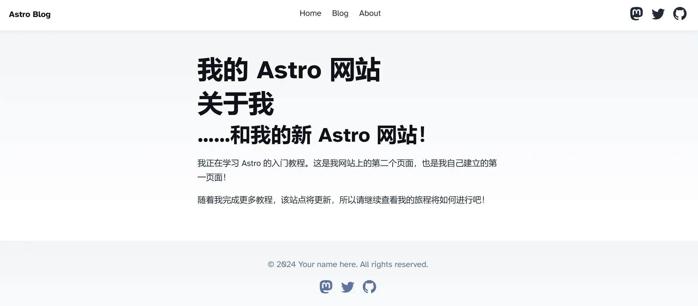

资源
看了这个大佬的博客感觉非常的流畅，研究一下这个网站所用到的框架 Astro ！
正文
为什么是 Astro？
官网说用这玩意构建的网站速度快。
功能
段落标题 功能
Astro 是一个集多功能于一体的 Web 框架 。它内置包含了你构建网站所需的一切。还有数百个不同的集成 和 API 钩子 可根据你的具体用例和需求定制你的项目。
一些亮点包括：
群岛 UI 无关 服务器优先 (EN) 默认无 JS 内容集合 可定制
设计原则
段落标题 设计原则
以下的五个核心设计原则有助于解释我们为什么做了 Astro，它需要解决的问题以及为什么 Astro 可能是你的项目或团队的最佳选择。
Astro 是…
内容驱动 服务器优先 默认快速 易于使用 以开发者为中心
Welcome, world!
创建项目
1 2 3 4 5 6 7 8 9 10 11 12 13 14 15 16 17 18 19 20 21 22 23 24 25 26 27 28 29 30 > npx
进项目启动开发服务：
1 2 3 4 5 6 7 8 9 10 11 12 13 14 > minor-meteor@0.0.1 dev
网站的入口内容由 src/pages/index.astro 控制。
前期准备
创建第一个 Astro 页面
Astro 组件的语法是 HTML 的超集。它的设计使得任何有 HTML 或 JSX 经验的人都感到熟悉。
在 src/pages/ 下创建一个 test.astro，里面放上内容：
1 2 3 4 5 6 7 8 9 10 11 12 13 14 15 16 17 18 19 20 21 22 23 24 25 26 27 28 29 30 31 ---
在 index.astro 中放入跳转入口：
打开 /test/ 则会看到：

页面
第一篇 Markdown 文章
创建 src/pages/posts/post-1.md，里面放上：
1 2 3 4 5 6 7 8 9 10 11 12 13 14 15 16 17 18 19 20 21 22 23 24 25 26 27 28 29 30 31 32 33 34 --- url: 'https://docs.astro.build/assets/rose.webp' alt: 'The Astro logo on a dark background with a pink glow.' tags: ["astro", "blogging", "learning in public"] --- # 我的第一篇博客文章 1. **安装 Astro** ：首先，我创建了一个新的 Astro 项目并设置好了我的在线账号。 2. **制作页面** ：然后我学习了如何通过创建新的 `.astro` 文件并将它们保存在 `src/pages/` 文件夹里来制作页面。 3. **发表博客文章** ：这是我的第一篇博客文章！我现在有用 Astro 编写的页面和用 Markdown 写的文章了！```C++ #include <iostream> using namespace std; int main() { cout << "Hello, world!" << endl; return 0; }
1 2 3 4 5 6 7 8 9 10 11 12 13 14 15
在正文内容中，用 {} 包含 Javascript 的表达式：
这个值在网页中就会被正确转换。
复杂一点的案例：
1 2 3 4 5 6 7 8 9 10 11 12 13 14 15 16 17 18 19 20 21 22 23 24 25 ---
Astro 的模板语法类似于 JSX 语法。如果你想知道如何在你的 HTML 中使用你的脚本，那么搜索一下 JSX 中是如何做到的，这可能是一个很好的出发点！
条件渲染：
1 2 3 4 5 6 7 8 9 10 11 12 13 14 ---
添加样式
引入 CSS：
Astro 的 <style> 标签还可以使用 define:vars={ {...} } 指令引用 frontmatter 中的任何变量。你可以在代码围栏中定义变量，然后在样式标签中将其用作 CSS 变量使用 。
1 2 3 4 5 6 7 8 9 10 11 12 13 14 15 ---
全局样式
Astro 的 <style> 标签默认是有作用域 的，意味着它只能影响到当前文件中的元素。
在 Astro 文件的 frontmatter 中加入如下语句即可引入外部 CSS：
1 2 3 ---
组件
创建和设计 Astro 组件
在项目中创建一个新的文件夹 src/components/ 来容纳 .astro 文件，它们会被用来生成 HTML 代码，但不会成为网站上的新页面。
创建一个 src/components/Navigation.astro，放入如下内容：
1 2 3 4 5 ---
在 frontmatter 中注册后便可使用这个组件：
1 2 3 4 5 ---
就是教你怎么在组件中复用另一个组件，同时传递参数。
创建一个 src/components/Navigation.astro，内容如下：
1 2 3 4 ---
Astro.props; 这么写应该就是可以提供一个传参的接口了（作为 props 接收）。
在 src/components/Footer.astro 中引入并使用它：
1 2 3 4 5 ---
第一个浏览器脚本
创建一个 src/components/Hamburger.astro，内容如下：
1 2 3 4 5 6 7 8 9 10 11 12 13 14 15 16 17 18 19 20 21 22 23 ---
创建 src/components/menu.js，内容如下：
1 2 3 document .querySelector ('.hamburger' ).addEventListener ('click' , () => {console .log ('clicked' );
引入并渲染 Hamburger.astro，并引入 menu.js：
1 2 3 4 5 6 7 8 9 ---
布局
第一个布局组件
创建一个 src/layouts/BaseLayout.astro，给 BaseLayout 设置插槽：
<slot /> 允许你将写在开放和闭合 <Component></Component> 标签之间的子内容 注入（或者说是「插入」）到任何 Component.astro 文件中。
1 2 3 4 5 6 7 8 9 10 11 12 13 14 15 16 17 18 19 20 21 22 23 24 ---
修改 src/pages/index.astro，使用这个布局组件，并传参：
1 2 3 4 5 6 7 ---
博客布局
创建 src/layouts.MarkdownPostLayout.astro：
1 2 3 4 5 6 7 8 9 10 11 12 13 14 15 16 17 ---
在 src/pages/posts/post-1.md 中，设置 frontmatter 属性。
1 2 3 4 5 6 7 8 9 10 11 12 13 14 15 16 17 18 19 20 21 22 23 24 25 26 27 28 29 30 31 32 33 34 35 --- url: 'https://docs.astro.build/assets/rose.webp' alt: 'The Astro logo on a dark background with a pink glow.' tags: ["astro", "blogging", "learning in public"] --- # 我的第一篇博客文章 1. **安装 Astro** ：首先，我创建了一个新的 Astro 项目并设置好了我的在线账号。 2. **制作页面** ：然后我学习了如何通过创建新的 `.astro` 文件并将它们保存在 `src/pages/` 文件夹里来制作页面。 3. **发表博客文章** ：这是我的第一篇博客文章！我现在有用 Astro 编写的页面和用 Markdown 写的文章了！```C++ #include <iostream> using namespace std; int main() { cout << "Hello, world!" << endl; return 0; }
1 2 3 4 5 6 7 8 9 10 11 12 13 14 15 16 17 18 19 20 21 22
这么做在布局里又套了一个布局。
这说明 astro 的布局使用 const { frontmatter } = Astro.props; 接收子对象的数据，使用 <BaseLayout pageTitle={frontmatter.title}> 将数据传递给父对象。
Astro API
创建文章存档页
创建 src/pages/blog.astro，内容如下：
1 2 3 4 5 6 7 8 9 10 11 ---
这里说明了 const allPosts = await Astro.glob('./posts/*.md'); 会将所有 ./posts/ 下的 .md 文件读取，并将其中的 frontmatter 信息以对象的形式存在 allPosts 中。
之后就可以调用这个对象。
生成标签页面
创建 src/pages/tags/[tag].astro：
1 2 3 4 5 6 7 8 9 10 11 12 13 14 15 16 17 18 19 ---
之后就会创建 /tags/astro、 /tags/successes……等页面。
之后我们将其改为以动态路由的形式：
1 2 3 4 5 6 7 8 9 10 11 12 13 14 15 16 17 18 19 20 21 22 23 24 25 26 27 28 29 30 31 32 33 ---
从现有标签生成页面
如此做，将会从现有标签生成标签页，避免了手动定义：
1 2 3 4 5 6 7 8 9 10 11 12 13 14 15 16 17 18 19 20 21 22 23 24 25 26 ---
安装 RSS 包：
1 npm install @astrojs/rss
1 2 3 4 up to date in 9s
重新启动服务器：
创建 src/pages/rss.xml.js：
1 2 3 4 5 6 7 8 9 10 11 import rss, { pagesGlobToRssItems } from '@astrojs/rss' ;export async function GET (context ) {return rss ({title : 'Astro Learner | Blog' ,description : 'My journey learning Astro' ,site : context.site ,items : await pagesGlobToRssItems (import .meta .glob ('./**/*.md' )),customData : `<language>en-us</language>` ,
访问 http://localhost:4321/rss.xml：
1 <?xml version="1.0" encoding="UTF-8" ?> <rss version ="2.0" > <channel > <title > Astro Learner | Blog</title > <description > My journey learning Astro</description > <link > https://example.com/</link > <language > en-us</language > <item > <title > 我的第一篇博客文章</title > <link > https://example.com/posts/post-1/</link > <guid isPermaLink ="true" > https://example.com/posts/post-1/</guid > <description > 这是我 Astro 博客的第一篇文章。</description > <pubDate > Fri, 01 Jul 2022 00:00:00 GMT</pubDate > <author > Astro 学习者</author > </item > <item > <title > 我的第二篇博客文章</title > <link > https://example.com/posts/post-2/</link > <guid isPermaLink ="true" > https://example.com/posts/post-2/</guid > <description > 学习了一些 Astro 后，我根本停不下来！</description > <pubDate > Fri, 08 Jul 2022 00:00:00 GMT</pubDate > <author > Astro 学习者</author > </item > <item > <title > 我的第三篇博客文章</title > <link > https://example.com/posts/post-3/</link > <guid isPermaLink ="true" > https://example.com/posts/post-3/</guid > <description > 我遇到了一些问题，但是在社区里面提问真的很有帮助！</description > <pubDate > Fri, 15 Jul 2022 00:00:00 GMT</pubDate > <author > Astro 学习者</author > </item > </channel > </rss >
其中，<link>https://example.com/</link> 里的值在 astro.config.mjs 中编辑。
群岛
搭建 Astro 岛屿
添加 Preact：
1 2 3 4 5 6 7 8 9 10 11 12 13 14 15 16 17 18 19 20 21 22 23 24 25 26 27 28 29 30 31 32 33 34 35 36 37 38 39 40 41 42 43 44 45 46 47 48 49 50 51 52 53 54 55 56 57 √ Resolving packages...
创建 src/components/Greeting.jsx：
Astro 支持多种 JavaScript 配置文件格式，如：astro.config.js、astro.config.mjs、astro.config.cjs 和 astro.config.ts。我们推荐在大多数情况下使用 .mjs，如果你想在配置文件中编写 TypeScript，则建议使用 .ts。
1 2 3 4 5 6 7 8 9 10 11 12 13 14 15 16 17 import { useState } from 'preact/hooks' ;export default function Greeting ({messages} ) {const randomMessage = (Math .floor (Math .random () * messages.length ))];const [greeting, setGreeting] = useState (messages[0 ]);return (<div > <h3 > {greeting}! Thank you for visiting!</h3 > <button onClick ={() => setGreeting(randomMessage())}> New Greeting </button > </div >
在 src/pages/index.astro 里：
client:load 指令告诉 Astro 在页面加载时将其 JavaScript 发送并重新运行到客户端上，使组件可交互。这称为 被 Hydrate 的 组件。
<ReactCounter client:load /> 组件会载入 HTML、CSS 和 JavaScript。<SvelteCard /> 组件会载入仅 HTML 和 CSS。
1 2 3 4 5 6 7 8 9 ---
其他
命令对照：
Astro
Hexo
功能
npm run devhexo s服务器浏览
npm run buildhexo d构建项目
使用主题：astro-theme-pure
下载主题：
1 2 git clone https://github.com/cworld1/astro-theme-pure.git
安装依赖：
之后要自己慢慢折腾了。
使用主题：Startlight
创建项目：
1 npm create astro@latest -- --template starlight
进这个项目，安装依赖：
启动服务器：
更新内容
编辑 src/content/docs/index.mdx 文件即可查看此页面的更改。
添加新内容
将 Markdown 或 MDX 文件添加到 src/content/docs 目录中即可创建新页面。
配置您的站点
在 astro.config.mjs 文件中编辑 sidebar 和其他配置项。
阅读文档
在 Starlight 文档 中了解更多信息。
渲染插件
Astro 支持添加第三方 remark 和 rehype 插件来解析 Markdown。
remark 处理 Markdown
rehype 处理 Html
这里，添加一个 remark 插件：remcohaszing/remark-mermaidjs: A remark plugin to render mermaid diagrams using playwright
1 2 3 npm install remark-mermaidjs
在 astro.config.mjs 中引入插件：
1 import remarkMermaid from 'remark-mermaidjs'
在 astro.config.mjs 中使用插件：
1 2 3 4 5 6 7 8 9 10 11 12 13 14 15 16 17 18 19 export default defineConfig ({markdown : {remarkPlugins : [remarkReadingTime, remarkMath, remarkArxivCards, remarkMermaid],rehypePlugins : [behavior : 'append' ,properties : { className : ['anchor' ] },content : { type : 'text' , value : '#' }
预览：